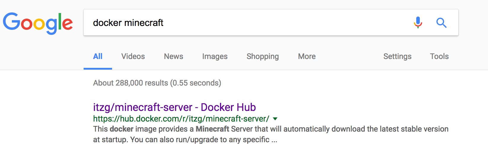

Intro to Docker Workshop
Rob Cannon
robpc
robtng
rpcannon
What is docker?
"Docker is the world’s leading software container platform."
- docker.com

Advantages to using docker
- Isolated processes
- More efficient than Virtual Machines
- Consistency across platforms
Inspiration
Advanced Docker Volumes - Michael Crosby
- Explains using volumes with multiple containers
- Demonstrates one proccess per container
- Uses a "real world" example with Minecraft
But, newer features in docker make it feel a bit dated.

Minecraft Hub Project
- Minecraft Server
- Backup data
- Generate a map
- Web server
Step 0: Install and Setup
Install docker from docker.com
Open terminal and create directory
$ mkdir -p docker-workshop/minecraft-hub
$ cd docker-workshop/minecraft-hub
Workshop Cheatsheet
[links to materials (github)]
Step 1: Running an application in docker
First Rule of Docker: Has someone done it already?
(Probably)

$ docker run -e EULA=TRUE -e VERSION=1.12 -p 25565:25565 \
-t itzg/minecraft-server
Managing running containers
list
$ docker ps
CONTAINER ID IMAGE COMMAND CREATED STATUS PORTS NAMES
82d8695c6efa itzg/minecraft-server "/start" 17 minutes ago Up 17 minutes (healthy) 0.0.0.0:25565->25565/tcp, 25575/tcp modest_hermann
stop
$ docker stop 82d8695c6efa
82d8695c6efa
delete
$ docker rm 82d8695c6efa
82d8695c6efa
docker-compose
Use configuration files to manage docker containers
All the previous commands are also available with docker-compose
$ docker-compose run
$ docker-compose stop
$ docker-compose rm
Container settings are stored in a yaml file
Step 2: Again with docker-compose
Add this to docker-compose.yml
version: '2'
services:
server:
image: itzg/minecraft-server
ports:
- "25565:25565"
environment:
- EULA=TRUE
- VERSION=1.12
$ docker-compose up
Environment Variables
How they can make your build env agnostic
Step 3: Adding the backup process
Create a /snapshots
Download entrypoint.sh
Create Dockerfile
FROM debian:jessie
RUN apt-get update -y && \
apt-get install -y \
vim python python-pip groff zip
RUN pip install awscli
RUN mkdir /home/snapshots
RUN mkdir /home/snapshots/backups
WORKDIR /home/snapshots/backups
COPY entrypoint.sh /home/snapshots
ENTRYPOINT bash /home/snapshots/entrypoint.sh
$ docker build -t snapshots .
Let's talk about images versus containers
$ docker images
Let's add snapshots to the main project
version: '2'
services:
server:
# ...
snapshot:
build: ../snaphosts
cpu_shares: 100
mem_limit: 134217728
volumes:
- ./backup:/backup
volumes_from:
- server
environment:
- SNAPSHOT_NAME=minecraft-backup
- SNAPSHOT_TIMESTAMP_FORMAT=%Y%m%d-%H%M%S
- SNAPSHOT_INTERVAL=3600
- SNAPSHOT_MAX_NUM=3
- SNAPSHOT_LOCATION=/data
- SNAPSHOT_DESTINATION=/backup
- SNAPSHOT_METHOD=local
- SNAPSHOT_COMPRESSION=zip
Why you should (almost) never use the docker cli again
Why is it in a separate container?
One process per container paradigm
volumes
volumes_from
Advanced: docker-compose config for development
Step 4: Adding the map generator
Follow up to the First Rule
Probably, but that doesn't mean it can't be better
Let's add mapgen to the project
version: '2'
services:
server:
# ...
snapshot:
# ...
mapgen:
build: ../minecraft-overviewer
volumes_from:
- server
environment:
- MINECRAFT_VERSION=1.12
- MINECRAFT_WORLD_DIR=/data/world
- MAPGEN_INTERVAL=120
Advanced: Keeping sensitive information out of your build
env_file
Downloading from s3
Container Fight: Battle of the CPU - How about resources?
docker stats
cpu_shares/mem_limit
Step 5: Adding the web server
version: '2'
services:
server:
# ...
snapshot:
# ...
mapgen:
# ..
web:
build: ../minecraft-hub-web
ports:
- "80:80"
volumes_from:
- mapgen
environment:
- MAP_DIR=/home/minecraft-overviewer/render/
A word about using standard out for logging
Separating Frontend and Backend Development
Where can we go from here?
Uploading to a repository
docker-compose in github